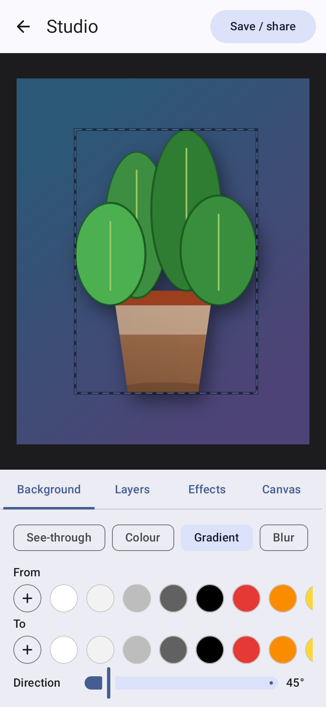
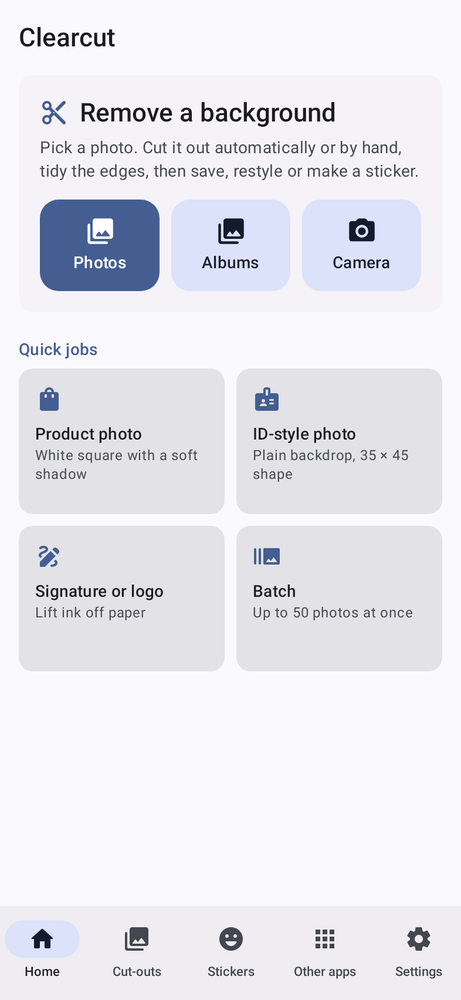
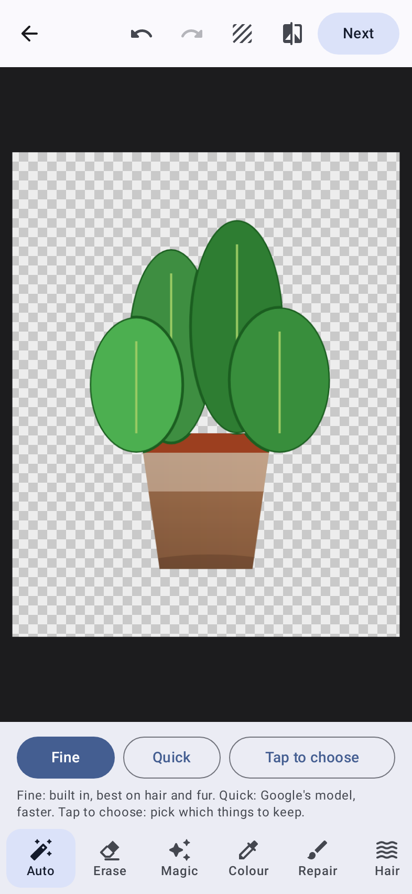
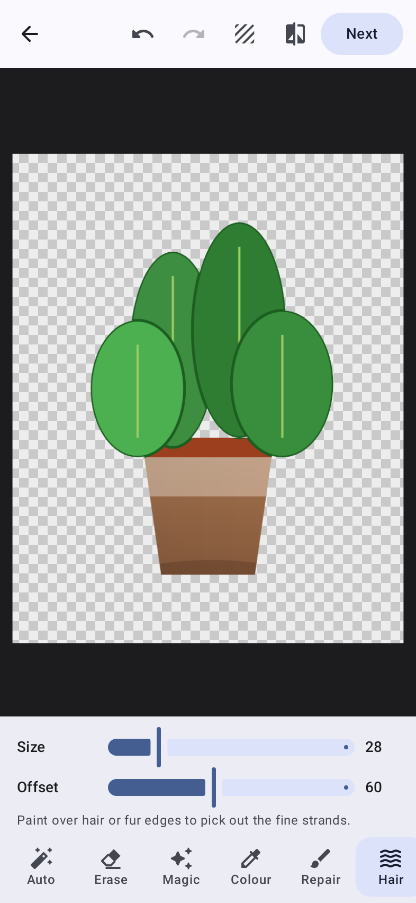
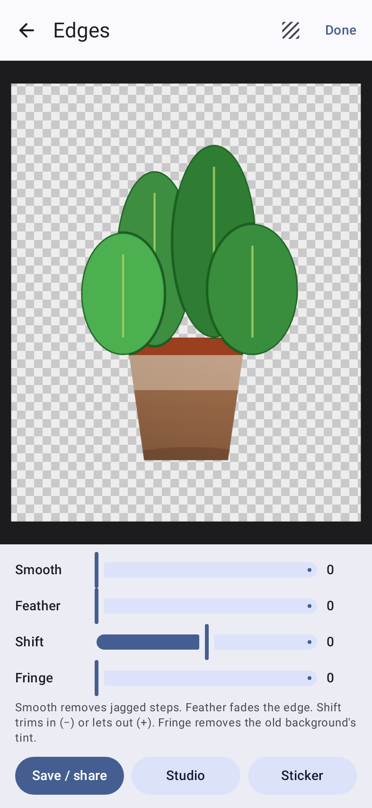
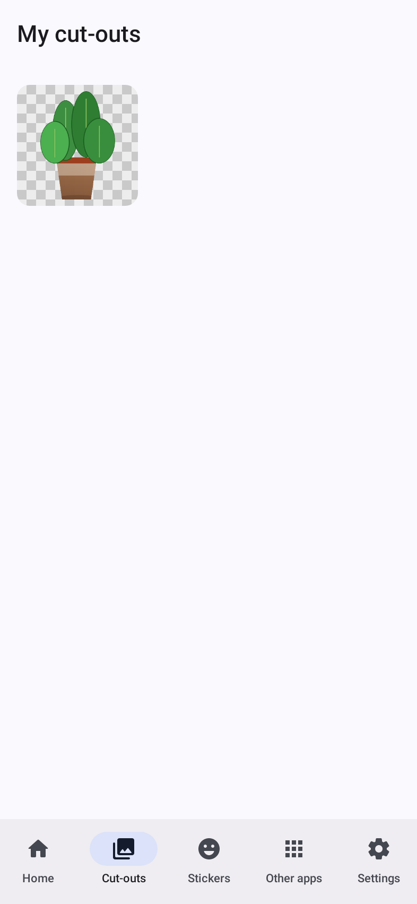
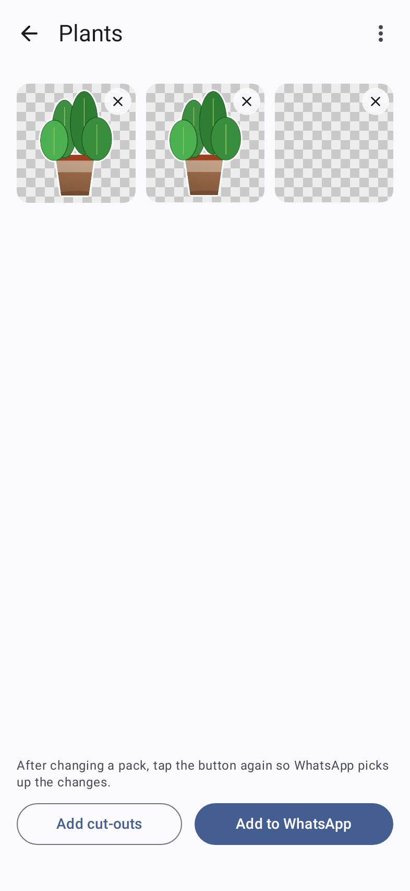

Cut out the background, not your privacy
Clearcut removes the background from a photo. One tap cuts the subject out, and hand tools tidy whatever is left. Save it see-through, put something new behind it, or make it a WhatsApp sticker.
The work is done on your phone, so your photos are never uploaded.
Download for AndroidHow to install
- Version 1.4
- Android 10 or later, 64-bit
- 114 MB
Free, with nothing to unlock. No adverts, no account with the developer, no tracking. Compare or read the release notes.
Chrome may say the file might be harmful. It shows this for app files that do not come from Google Play. Choose Download anyway.

- No creditsEvery cut-out is full size, as often as you like.
- No advertsNone in the app and none on this site.
- No uploadsBoth cut-out engines run on the phone.
- No accountNothing to sign up for.
A look inside
These are the real screens, drawn from the app's own code with a made-up photo of a pot plant. Swipe or scroll sideways to see them all.






How it works
Online background removers need you to upload your photo, and many charge for the full-size result. Clearcut does the whole job on the phone in your hand.
Pick a photo
From your gallery, from an album, or straight from the camera. Or send one to Clearcut from another app with Share.
Cut it out
Tap Auto and the subject is lifted off its background. If a photo has several things in it, tap the ones you want to keep.
Finish it
Tidy the edges, then save a see-through picture, give it a new background in the Studio, or add it to a sticker pack.
Everything is in, and all of it is free
Nothing below is held back for a paid tier, because there is no paid tier.
Cutting out
- Two automatic engines
- Fine is packed inside the app, needs no internet and is the better of the two on hair and fur. Quick is Google's on-phone model and is faster.
- Tap to choose
- Clearcut shows each separate thing it finds: people, pets, products, vehicles. Tap the ones to keep.
- Hand tools that stop at the edge
- Erase, Magic, Colour and Repair, with a target that sits clear of your finger, pinch to zoom, undo and redo.
- Hair, Lasso and Shape
- Pick out fine strands, draw round an area, or cut to a rectangle, oval, heart or star.
Finishing
- Edges that look right
- Smooth takes out jagged steps, Feather fades the edge, Shift trims a halo and Fringe removes the old background's tint.
- Something new behind it
- A colour, a gradient, the original blurred, a photo of your own or a built-in backdrop, with shadow and outline.
- Several cut-outs at once
- Put more than one on the same canvas, then move, resize, turn, flip and reorder them.
- Save your way
- PNG, WebP or JPG at a choice of sizes, or share straight to another app.
Quick jobs
- Product photo
- A white square with a soft shadow.
- ID-style photo
- A plain background in a 35 by 45 shape.
- Signature or logo
- Lifts the ink off the paper.
- Batch
- Up to 50 photos cut out in turn while you get on with something else.
Stickers
- WhatsApp sticker packs
- Gather cut-outs into a pack and add it to WhatsApp with one tap. No second app needed.
- Cut-outs kept
- Every finished cut-out is kept under Cut-outs, to reopen and carry on with later.
- New-version notice
- Clearcut tells you when a newer version is out.
Your photos are your business
Nothing is uploaded
Both cut-out engines run on the phone. A photo of your children, your passport or your signature goes no further than your own hand.
No accounts, no adverts
There is nothing to sign up for and no advertising in the app. This site has no cookies and no tracking.
No servers
Clearcut's developer runs no servers and collects nothing. There is no log of who uses the app or what they make with it.
Installing and updating
Clearcut is not on Google Play, so your phone asks a couple of extra questions the first time.
Download the app file
Tap Download on your phone. The file is called Clearcut.apk and is about 114 MB. If Chrome says the file might be harmful, choose Download anyway.
Allow the install
Open the file. The first time, Android asks you to allow your browser to install apps. Allow it, go back and tap Install. If Google Play Protect steps in, choose More details, then Install anyway.
Updating later
Clearcut tells you when a newer version is out. Install the new file over the old one and everything you have saved is kept.
Version 1.4, released 21 November 2026. See the release notes, or check your download.
Questions
Is Clearcut really free?
Yes. There is no paid version, no subscription, no credits and no adverts, and nothing in the app is locked. See the comparison.
Is Clearcut on Google Play?
No. Clearcut is a personal project and is downloaded from this site as an Android app file. It needs Android 10 or later on a 64-bit phone, which covers almost every phone sold in recent years.
Are my photos uploaded anywhere?
No. Both cut-out engines run on your phone, and Clearcut has no servers. The Quick engine is run by Google's ML Kit, which sends Google technical statistics about how it performs, such as the phone model and how long a cut-out took. It never sends your photos. The detail is in the privacy policy.
What is the difference between Fine and Quick?
Fine is a cut-out model packed inside the app. It needs no internet and is better on hair, fur and fiddly edges, but takes a few seconds. Quick is Google's on-phone model, which Google Play services downloads the first time it is needed. It is faster and can pick out each separate thing in a photo. Both are one tap away, so try each and keep the better result.
Why does my see-through picture look black?
Some gallery apps show see-through areas as black. The picture is still see-through: open it in Clearcut again, or place it in another app, and you will see. JPG files can never be see-through, so save as PNG or WebP.
How large can the finished picture be?
Clearcut brings a large photo down to 2,048 pixels on its longest side while you work on it, or 3,072 if you choose High in Settings. The picture you save is that size, or smaller if you ask for it.
Where are my pictures saved?
In Pictures/Clearcut on your phone, where your gallery can see them. Batch results go to Pictures/Clearcut/Batch. Every cut-out you finish is also kept inside the app under Cut-outs, so you can reopen it and carry on.
Will the ID-style photo be accepted for a passport?
Clearcut gives you a plain light background and a 35 by 45 shape. It does not check the official rules on head size, lighting or expression, so check the guidance for the document you are applying for.
Why is the download so large?
The file is about 114 MB because the Fine cut-out model travels inside the app, which is what lets it work with no internet.
How do I update Clearcut?
Clearcut tells you on its home screen when a newer version is out. Download it from this site and install it over the one you have. Your cut-outs, sticker packs and settings are kept.
A clean cut-out, on your own phone
Free, with no adverts and nothing to unlock. Made by the developer of several other free Android apps: see them all.